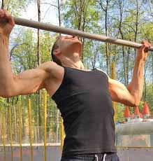

Ejercicio de dominadas con distintos agarres: qué músculos trabajan más
 Webedia Vitónica Menú Nuevo ENTRENAMIENTO Y FITNESS NUTRICIÓN Y DIETAS SALUD RUNNING EQUIPAMIENTO Instagram Facebook Youtube Flipboard EntrenamientoLa activación de tus músculos según el agarre de tu dominada: todo lo que tienes que saber
HOY SE HABLA DE Smartwatch Menú Dieta NikeSuscríbete a Vitónica
Síguenos Twitter Facebook Youtube Instagram Flipboard Sin comentarios 31 julio 2020, 16:01 Manu Herrera @manu_hh_11Las dominadas son un ejercicio multiarticular ampliamente utilizado en una variedad de entrenamientos de fuerza para trabajar la musculatura de la parte superior del cuerpo.
Es muy común la realización de dominadas con diferentes agarres (prono, supino, neutro o con cuerda), aunque tanto los sujetos que entrenan la fuerza como muchos entrenadores no conocen verdaderamente las diferencias en la activación muscular entre los diferentes tipos de dominadas según el agarre.
En Vitónica Los ejercicios que te ayudan a hacer más dominadasTipos de agarre en las dominadas
En las dominadas se pueden utilizar diferentes agarres, siendo los más comunes el agarre prono , el agarre supino y el agarre neutro .
A su vez, cada vez más sujetos también practican las rope pull ups , que son dominadas cuyo agarre y tirones se realizan en una cuerda , como puede verse en el vídeo.
No debemos basarnos en suposiciones
A pesar de la familiaridad de las dominadas entre los profesionales del mundo del entrenamiento, hay una falta de conocimiento de la activación muscular durante este ejercicio y sus variantes según el agarre que se utilice.
Muchos profesionales del fitness trabajan bajo la suposición de que las variaciones de los ejercicios de dominadas según el agarre pueden entrenar diferentes músculos en grados diferentes, pero no se debe trabajar sobre suposiciones o sobre lo que uno escucha por ahí.
Uno puede intuir que un tipo de dominada puede activar más un cierto músculo, pero esto no puede afirmarlo y transmitirlo si no ha sido medido e informado científicamente y uno ha podido acceder a dicha información. A partir de ahí podrá trasladar esa información y utilizar el tipo de dominada que más le interese según el objetivo, sin tener que basarse en suposiciones.
En Vitónica Dominadas en barra Vs dominadas en anillas: así trabajan tus músculos con cada opciónLa comprensión de cómo la orientación de agarre en las dominadas puede alterar el nivel de activación muscular es importante cuando se considera la especificidad y la eficiencia del entrenamiento, ya que las variantes de las dominadas que resulten en diferentes niveles de activación muscular pueden inevitablemente promover diferentes grados de adaptación de fuerza en los músculos en particular.
Por lo tanto, es importante que los profesionales del fitness comprendan el nivel de activación muscular en las dominadas cuando se prescriben variaciones de dicho ejercicio.
Variaciones en la activación muscular según el agarre de nuestra dominada
Al contrario de lo que muchos puedan pensar, un estudio publicado en este 2017 y cuyo objetivo era medir las diferencias en la activación muscular entre las dominadas según el agarre utilizado (prono, supino, neutro, cuerda), ha demostrado que los cuatro agarres provocan similares activaciones en nuestros músculos .
Aunque hay pequeñas diferencias, estas diferencias no son significativas , y entro en detalle.
El pico de activación muscular y la activación muscular media de los músculos braquiorradial, bíceps braquial, deltoides medio, pectoral mayor, trapecio inferior, dorsal ancho e infraespinoso es similar en todas las variaciones de agarre de las dominadas.
La única y mayor diferencia se muestra en el trapecio medio , cuya activación es superior en las dominadas con agarre prono, siendo las dominadas con agarre neutro las que menos activan dicho músculo.
Por tanto, a excepción del trapecio medio, en el cual existe una diferencia significativa sobre todo entre la dominada con agarre prono (la que más lo activa) y la dominada con agarre neutro (la que menos lo activa), el pico de activación muscular y la activación muscular media del complejo hombro-brazo-antebrazo es similar independientemente de la orientación de la mano (agarre) durante diferentes variaciones del ejercicio de dominadas.
En consecuencia, quedan refutadas las típicas hipótesis y creencias comunes entre los profesionales de fitness de que existen bastantes diferencias en la activación muscular según el agarre que utilicemos en nuestras dominadas.
En Vitónica Distintas formas de asistir en las dominadas para conseguir subirLa fase concéntrica del movimiento activa más los diferentes músculos
Las fase concéntrica de las cuatro variantes de agarre de dominadas resulta en un pico de activación muscular significativamente mayor de los músculos braquiorradial, bíceps braquial y pectoral mayor en comparación con la fase excéntrica.
Además de los tres músculos mencionados anteriormente, la fase concéntrica de la dominada con agarre prono da lugar a una activación muscular media significativamente mayor del deltoides medio y el trapecio inferior.
De forma similar, el trapecio inferior muestra una activación muscular media significativamente mayor durante la fase concéntrica de las variantes de dominada con agarre supino y con la variante de agarre con cuerda .
Esto indica que los músculos antes mencionados experimentan un mayor reclutamiento de unidades motrices , y por lo tanto mayor intensidad , durante la fase concéntrica del movimiento independientemente del agarre de la dominada.
Comparativamente, el trapecio medio, el dorsal ancho y el infraespinoso trabajan a niveles similares de activación muscular media durante las fases concéntricas y excéntricas de cada una de las variaciones de agarre en las dominadas.
Se ha informado que el bíceps braquial y el braquiorradial parecen funcionar como motores primarios durante la fase concéntrica de cada variante de agarre de la dominada, mientras que el trapecio medio e inferior, el dorsal ancho y el infraespinoso trabajan consistentemente para controlar tanto las fases concéntricas como las excéntricas .
¿Provocamos adaptaciones en la fuerza en todos los músculos con los diferentes agarres?
Se ha informado que se requiere una activación muscular por encima del 50-60% de la máxima contracción isométrica voluntaria para promover adaptaciones en la fuerza.
En base al pico de activación muscular observado en los diferentes agarres en las dominadas, se puede inferir que dicha activación parece suficiente para promover adaptaciones de la fuerza en los músculos braquiorradial, bíceps braquial, dorsal ancho e infraspinoso, independientemente de la orientación de la mano (agarre).
Sin embargo, también puede inferirse que los cuatro tipos de agarre pueden no resultar en activación muscular suficiente para promover adaptaciones en la fuerza del deltoides medio, el pectoral mayor y el trapecio inferior.
Si hablamos del grado de actividad del trapecio medio , sobre todo durante la dominada con agarre prono, aunque también en la variante de tirones con la cuerda (rope pull ups), éste indica que estas orientaciones de agarre pueden también promover adaptaciones en la fuerza de dicho músculo.
Sin embargo, el pico de activación muscular observado en el trapecio medio durante las dominadas con agarre supino y con agarre neutro está también por debajo del nivel previamente identificado de activación para promover adaptaciones en la fuerza.
Aunque ya he comentado que el trapecio medio es el músculo con más diferencias, siendo más activado en el agarre prono y siendo el agarre neutro el que menos lo activa, no es el músculo que más se activa, sino que el más activado es el braquiorradial , destacando la importancia de este músculo durante todas las variantes de agarre en las dominadas.
Resumiendo, parece que los cuatro agarres en las dominadas (prono, supino, neutro y con cuerda) obtienen similares niveles de activación muscular y adaptaciones en la fuerza cuando se implementan en los entrenamientos de fuerza.
Este artículo fue originalmente publicado por Manu Herrera en julio de 2017 y ha sido revisado para su republicación.
Imágenes | iStock, Youtube , Youtube , Youtube y Youtube
Vídeo | Six Star Pro Nutrition
En Vitónica | No es lo mismo una dominada estándar que una dominada con balanceo típica de CrossFit: conoce las diferencias
En Vitónica | La importancia de colocar cada parte del cuerpo correctamente para hacer una dominada perfecta
En Vitónica | Diferentes tipos de remo: utilízalos en función de tu objetivo
Vitónica en Instagram
Seguir
Compartir La activación de tus músculos según el agarre de tu dominada: todo lo que tienes que saber
Facebook Twitter Flipboard E-mail Temas Entrenamiento Ejercicio Espalda Dominadas Entrenamiento en el gimnasioCompartir
Facebook Twitter Flipboard E-mail Comentarios cerrados Temas de interés quinoa crossfit fitbit pilates ejercicios yoga adelgazar andando ayuno intermitente tofu adelgazar sin dieta pastillas adelgazar mercadona dieta keto dieta disociada comida a domicilio Inicio Lesiones Dietas Recetas Saludables Musculación Entrenamiento Alimentos Yoga Abdominales Rutinas Suplementos HIIT CardioVer más temas
Síguenos Twitter Facebook Youtube Instagram Flipboard E-mail Vitónica TV Lo mejor Equipo editorial Contacta con nosotrosMás sitios que te gustarán
Xataka Trendencias Poprosa EspinofExplora en nuestros medios
Tecnología Móviles, tablets, aplicaciones, videojuegos, fotografía, domótica Xataka Xataka Móvil Xataka Foto Xataka Android Xataka Smart Home Xataka Windows Xataka Ciencia Applesfera Genbeta Magnet Mundo Xiaomi Videojuegos Consolas, juegos, PC, PS4, Switch, Nintendo 3DS y Xbox 3DJuegos Vida Extra IGN Millenium Entretenimiento Series, cine, estrenos en cartelera, premios, rodajes, nuevas películas, televisión Sensacine Espinof Gastronomía Recetas, recetas de cocina fácil, pinchos, tapas, postres Directo al Paladar Estilo de vida Moda, belleza, estilo, salud, fitness, familia, gastronomía, decoración, famosos Vitónica Trendencias Trendencias Hombre Decoesfera Compradiccion Poprosa Latinoamérica Publicaciones de México Xataka México Directo al Paladar México Sensacine México 3DJuegos México Aviso legal Condiciones de uso Condiciones de uso de cookies Publicidad InicioReciente
Escarpines con los que disfrutar de deportes y actividades acuáticas este verano Siete sujetadores deportivos con distintos niveles de sujeción que fichamos en las rebajas de Nike Nike inicia sus rebajas: zapatillas de running, zapatillas de entrenamiento y ropa deportiva con grandes descuentos Los cinco mejores consejos para nadadores principiantes ¿Calidad o cantidad? Qué tiene más importancia en una dieta para adelgazar 13 recetas de gazpacho alejadas del tradicional, saludables y sorprendentes Peso muerto convencional, sumo, piernas rígidas y rumano: ¿cuáles son sus diferencias? 19 prendas de ropa y accesorios para jugar a pádel que puedes encontrar en Decathlon Si estás buscando un GPS para tus aventuras en bici echa un vistazo a este Garmin por menos de 200 euros en Decathlon Guía para principiantes (X): Flexiones de brazos en suelo Rebajas de hasta el 50% en Adidas: zapatillas, camisetas y pantalones al mejor precio Cinco consejos para prevenir un golpe de calor Los 11 pescados más saciantes para la dieta por su alto contenido proteico En qué fijarnos al leer las etiquetas nutricionales de los gazpachos y salmorejos de supermercado para elegir el más saludable El equipamiento con el que ir preparado a tu próxima acampada o ruta de senderismo 11 sopas y cremas frías saludables, aptas para perder peso con una dieta keto o cetogénica Todo lo que debes saber para realizar la flexión de brazos perfecta, sacar el máximo provecho y evitar lesiones El ayuno intermitente no ofrecería más beneficios que dietas tradicionales hipocalóricas al momento de perder peso, según un reciente estudio Rutina facial para deportistas: 5 buenos hábitos y un producto indispensable para que tu piel no sufra en Trendencias Galletas saladas crujientes de semillas y hierbas con dip de yogur: receta saludable para picotearVer más artículos
Vitónica TV
El desayuno NO es la comida más importante del día Xiaomi Mi Smart Band 6: tan RECOMENDABLE e IMPERFECTA como siempre Xiaomi Mi Watch Lite, análisis: PERFECTO PARA SER TU PRIMER SMARTWATCHVer más vídeos
Síguenos Twitter Facebook Youtube Instagram FlipboardEn Vitónica hablamos de
Lesiones Dietas Recetas Saludables Musculación Entrenamiento Alimentos Yoga Abdominales Rutinas Suplementos HIIT CardioVer más temas
SubirWebedia
Tecnología
Xataka Xataka Móvil Xataka Foto Xataka Android Xataka Smart Home Xataka Windows Xataka Ciencia Applesfera Genbeta Magnet Mundo XiaomiVideojuegos
3DJuegos Vida Extra IGN MilleniumEntretenimiento
Sensacine EspinofGastronomía
Directo al PaladarEstilo de vida
Vitónica Trendencias Trendencias Hombre Decoesfera Compradiccion PoprosaLatinoamérica
Xataka México 3DJuegos México Sensacine México Directo al Paladar México Webedia Xataka Vida Extra Espinof Genbeta Directo al Paladar Xataka Ciencia Trendencias Applesfera Xataka Móvil Decoesfera Vitónica Xataka Foto Trendencias Hombre Xataka Android Xataka Smart Home Xataka Windows Magnet Compradiccion 3DJuegos Sensacine IGN Millenium Poprosa Mundo Xiaomi